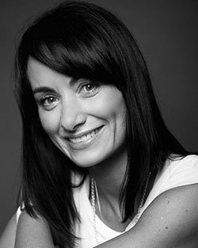

The Performers Academy has been one of Cork's leading stage schools for over 10 years.
We offer a range of classes in singing, dancing, drama, and musical theatre all over Cork.
Our main showcases take place twice a year, with our annual pantomime held in December in the Firkin Crane.
All students have an opportunity to audition and partake in this.
to learn more about this years show, Alice in Wonderland, click here!
Our second annual showcase is suitably named "Gotta Sing Gotta Dance," and takes place in May in the Cork Opera House.
This is an amazing one night only show featuring a wide variety of singing, dancing, and musical theatre from our immensely talented students.
to watch previous performances click here!
Videos
As a child, Irene trained with the "Montfort Stage School, "Joan Denise Moriarty" Ballet school, Annette De Foubert for singing and Lorna Daly for Drama, achieving Gold Medals, with Distinction from LAMDA in Acting and Verse and Prose. In later years, Irene studied with the remarkable Mary Curtin, who tutored Irene in her qualifications as a teacher. Irene spent many of those younger years performing in the Cork Opera House, where she appeared many times as the principle girl in their Pantomimes.
At the age of 18, Irene was cast in "Les Miserables" in London and subsequently appeared in the production for over two and a half years. Irene was a cast member for the 10th Anniversary performance at the Royal Albert Hall. She then joined the cast of "Miss Saigon" at the Drury lane Theatre for another two year run. Other West End credits include "Starlight Express" at the Apollo Victoria, "Something for the Boys" at the Barbican and "Grease" and "Summer Holiday", National tours.
Whilst performing by night, Irene trained most days in the Actors Studios in Covent Garden. During this time, Irene was cast as "The Singing Nun" in the hit TV series "Father Ted".
Irene has subsequently returned to London to appear in the 02 arena, where she performed as part of the cast for the epic 25th Anniversary performance of "Les Miserables". Many Performers Academy students watched the performance in Cork cinemas as it was televised worldwide. This was a very special moment to share with the up and coming future West End Performers

On her return to Cork, Irene played "Jill" in Bryan Flynn's "Jack and the Beanstalk" at the Cork Opera House and also the "Skating Fairy" in his production of "Beauty and the Beast". A role that two of the "Performer Academy" students will now take in the 2015 production at the Cork Opera House Irene has also appeared in the Opera House as "Mary Magdalene" in "Jesus Christ Superstar 'and "Maria" in the "Sound of Music". Irene originated the role of "Kitty Kiernan" in Bryan Flynn's masterpiece "Michael Collins" and is featured on some of the recordings on iTunes.
Irene has appeared on "BBCS Children in Need" on many occasions with various casts. She has also appeared in numerous commercials, including ones for "Knorr Soup", "Low Low Butter" and "Heineken".
As a director, Irene has directed Fame, Beauty and the Beast, The Wizard of Oz, Seussical, Annie, High School Musical, Maleficent, Fiddler on the Roof and Grease for the Performers Academy.
Irene was children's director of the Cork Opera Houses production of "Oliver" which toured to the Helix Theatre in Dublin. She has also directed "Les Miserables" student version, at the Cork Opera House, and "Oliver" for Centre Stage School in Mallow, and directed "Les Mis" for Scoil Mhuire.
Irene holds a Fellowship with London College as well as a teachers Licentiate. Irene's passion for theatre and her first-hand experience in the business has sculpted what the school has become today. A thriving environment of passion, purpose, determination and skill whilst having much fun along the way.
Irene appeared as the Evil Stepmother in "Cinderella" in the Everyman Theatres annual Pantomime.
Irene will once star in this years pantomime, "Beauty and the Beast."